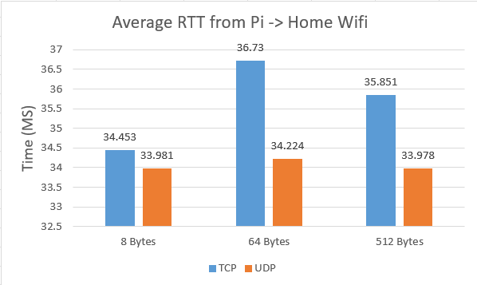
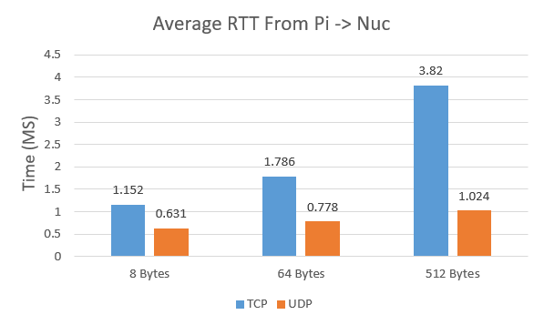
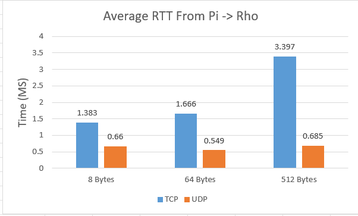
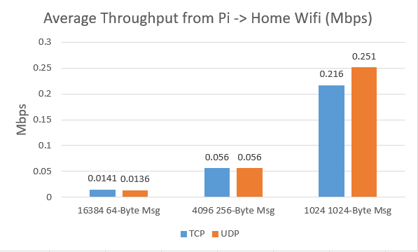
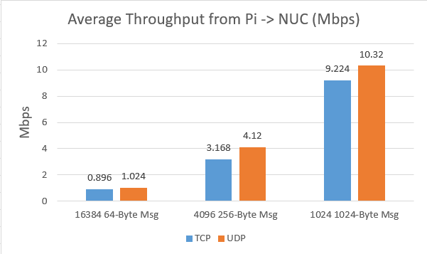
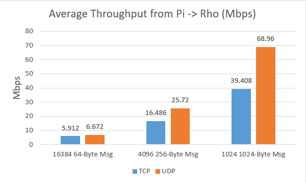

<!DOCTYPE html>

<body style="background-color:blueviolet;"></body>

<style>
    h1,h2{
        text-align: center;
    }
    .center {
  display: block;
  margin-left: auto;
  margin-right: auto;
  width: 50%;
}
</style>

<h1> CSC445 Assignment 1 - Measuring RTT and Throughput Across Different Networks Using TCP and UDP </h1>

<br>
<br>
<h2> 1 - RTT From Pi To Home Wifi</h2>



<br>
<h2> 2 - RTT From Pi to NUC</h2>



<br>
<h2> 3 - RTT From Pi to Rho</h2>



<br>
<h2> 4 - Throughput From Pi to Home Wifi</h2>



<br>
<h2> 5 - Throughput From Pi to NUC</h2>



<br>
<h2> 6 - Throughput From Pi to Rho</h2>



